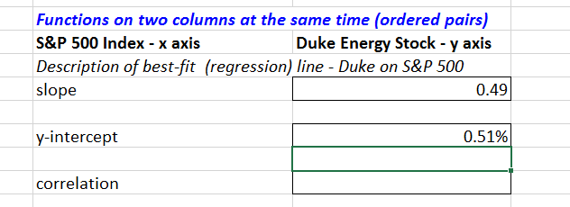
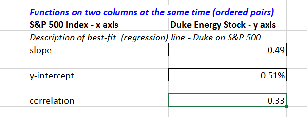
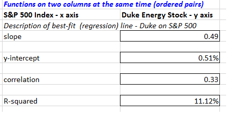
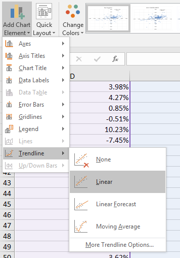
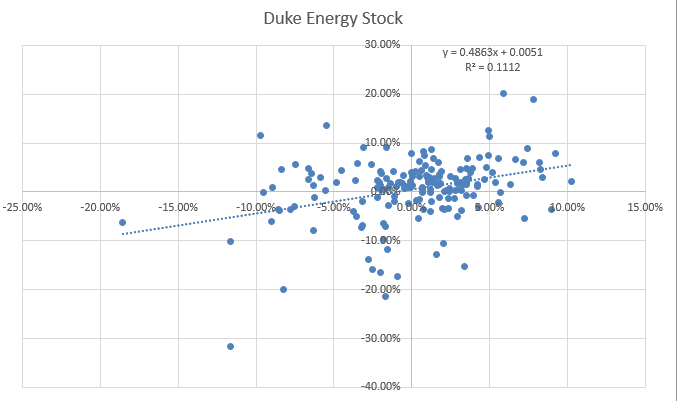

Objectives
Associations between variables
Functions
The functions available in Excel beyond arithmetic are extensive. There are hundreds of built in functions. Some functions are those that work within a cell and some work on sets of cells.
Individual Cell Functions:
Functions are used to perform functions on individual cells.
- ln(number) natural log
- log(number,base) log to the base
- pi()
- rand() random number generator
Groups of cells (Array) functions
Functions are used to perform special calculations in groups of cells. Some of these more common functions used in statistical applications include:
- MIN(range)
- MAX(range)
- SUM(range)
- AVERAGE(range)
- COUNT(range)
- COUNTIF(range,criteria)
- AND(condition1, condition2...) returns true if all conditions are true and false if not.
- OR(condition1, condition2...) returns true is any condition is true and false if not.
- IF(condition, value if true, value if false) returns one value if the condition is true and another if it is false.
- VLOOKUP(value, table range, column number) looks up a value in a table.
The easiest way to locate a particular function is to select a cell and click on the Insert function button on the ribbon. This is useful when you know the name of the function but are unsure of the arguments.
Functions on a set of numbers
The natural log of a number is used in business to figure out growth rates over time. ln(x) is the natural log of number x. The natural log of 1.5:
- Assuming 100% growth rate you are essentially asking how long does it take to grow to get to 1.5, the answer is .405, less than half the time period)
- Assuming 1 period of time, how much do you need to grow to get to 1.5 (40.5% per year)
You are either looking at growth rate or time period.
Save the following stock prices file.
We can perform functions on more than one variable such as pairs, two rows or two columns perhaps. This data is from Yahoo finance for the Standard and Poor's 500 index (US stock market index) and Duke Energy stock prices. The price is the closing price from the beginning of each month. 176 months of price data. We want to calculate the continuously compounded monthly return. To do this we take the natural log of the ratio between the two prices with the more recent price on top.
We do the natural log function of the price in August, divided by the price in July, this gives us a loss of -.29% In August the index was 1925.15 and in July it was 1930.67
This applies the natural log function to show the monthly continuously compounded return.
Now double click on the handle of cell D4 so that the remainder of the cell in column D are populated. Then copy the formula to cell E4 and populate all column E.
Duke Energy prices show as slightly up for the month 1.12%.
This shows two time series of monthly returns for the index and for an individual stock. You may now want to see how one stock performed again the larger market it is a part of. Which performed better?
To calculate the average of a series of values that are all in one column or one row (an array), we write a formula into cell G6
=Average(D4:D178).Then copy that relative reference formula over to cell H6
To find the average annual return in cell G8 then we multiply by 12. Again copy this formula over to H8.
Calculate the standard deviation of monthly returns in cell G10 using the stdev.p() function.
To calculate the annualised standard deviation we do not simply multiply by 12 we must multiple by the squareroot of 12. Excel has a function for this so in cell G12 enter the following:
=G10*sqrt(12)Now calculate the minimum and maximum for both the index and for Duke Energy stock.
We can see from the descriptive statistics that conclusions can be made; Duke Energy Stock has been much higher paying investment that investing in S&P over this time interval (14 years), there was a higher standard deviation of returns so Duke is not a free deal it has some cost in terms of risks.
Measures of Association
Two variables have a strong statistical relationship with one another if they appear to move together. We see examples on a daily basis; for instance, attendance at baseball games is often closely related to the win percentage of the team, and ice cream sales likely have a strong relationship with daily temperature.
When two variables appear to be related, you might suspect a cause-and-effect relationship, sometimes however, statistical relationships exist even though a change in one variable is not caused by a change in the other. For example the New York Times reported a strong statistical relationship between the golf handicaps of corporate CEOs and their companies stock market performance over three years. CEOs who were better than average golfers were likely to deliver above average returns to shareholders. Clearly, the ability to golf would not cause better business performance. One must be cautious in drawing inferences about causal relationships based soley on statistical relationships.
However the relationship between variables is extremely important in making good business decisions.
Using the stockPrices excel file from the previous step we will investigate the relationship between the S&P stock prices and Duke Energy stock prices.
We look at two columns of data at the same time using functions to work on ordered pairs. Our X axis values are the S&P index and the Y axis are Duke Energy stock for the same month. Each ordered pair represents one month in time and two results.
We would like to know what is the best fit line that fits that data, if they are perfectly correlated there will be a steep line, if there is little correlation there will be a flat line.
In these steps we place Duke Energy as the known y's and so we report on Duke Energy's relationship with S&P
To find the slope of the line we use the slope function.
=slope(E4:E178,D4:D178)Next we would like to know on average did Duke Energy stock out perform the S&P index. One way to discover this is what would be the return from Duke Energy if the S&P index returns zero? For this we use the Y-intercept function.
=intercept(E4:E178,D4:D178)
The outcome is slightly positive which tells us over the 14 years Duke Energy on average would return half a percent if the S&P returned zero.
The descriptive statistics of min, max, mean and standard deviation tell us these values move differently. But how differently? Are they always up together or down together, does Duke Energy always move up more independently?
For this we use the correl function.
=correl(E4:E178,D4:D178)
We can see it is positive but not strong. This tells us the Duke Energy stock goes it's own way independently of the market. It can be interpreted as a good thing as it is beneficial to have assets that are not highly correlated to each other.
The correlation between the SP500 and Duke Energy Stock shows there is a relationship that is significant but not overwhelming. There's a lot of independent movement too. This tells us that Duke Energy goes its own way, it is often down when the overall stock market is up and it goes up when the overall stock market is down. For a well performing stock this is a desirable characteristic as it allows greater diversification by having assets that are not highly correlated to the stock market as a whole.
Correlation is a measure of a linear relationship between two variables, X and Y, and is measured by the correlation coefficient. The correlation coefficient is between -1 and +1 A correlation of 0 indicates that two variables have no linear relationship to each other. Thus, if one changes, we cannot reasonably predict what the other variable might do. A positive correlation coefficient indicates a linear relationship for which one variable increases as the other also increases. A negative correlation coefficient indicates a linear relationship for one variable that increases while the other decreases.
You can also calculate the R-Squared value for the relationship between the S&P 500 and Duke Energy by using the RSQ() formula. Again enter the known y's as Duke Energy. R Squared is a statistical measure of how close the data are to the fitted regression line. It is also known as the coefficient of determination.
R-squared is always between 0 and 100%:
- 0% indicates that the model explains none of the variability of the response data around its mean.
- 100% indicates that the model explains all the variability of the response data around its mean.
- In general, the higher the R-squared, the better the model fits your data

The R-squared for S&P 500 and Duke Energy shows the relationship between the stocks explains only 11% of the variability around the mean.
Scatter charts
For the S&P and Duke stock prices file, select both columns D and E. Then go to the Insert Tab and from the charts section choose Scatter. In a scatter chart each dot represents one month's activity. the x axis represents the returns of S&P 500, and the y axis represents the returns of Duke Energy Stock.
A scatter plot chart is created for the data showing some association but not a high amount of association
We can add descriptive statistics by choosing trendline linear from the charts design tab.

A dotted line will appear. Now go back to the trendline menu and choose options, next check the box to display the equation on the chart and check the box to display the R-Squared value on the chart.
The equation may be a little small (you can click on the equation and move it to a better position on the chart if it is difficult to read) but if you can see it, it states Y=0.4863x + 0.0051. This means the slope is 0.4863 which is what we found before. The y-intercept is 0.0051 as we found before.

Measures of Shape
Histograms of sample data can take on a variety of different shapes. Some are symetrical, having its mode in the middle and falling away form the centre in roughly the same fashion either side. Some are symetrical or skewed, that is, more of the mass is concentrated on one side and the distribution of values tails off to the other. Those that tail off to the right, are called positively skewed. Those that tail off to the left are said to be negatively skewed.
The coefficient of skewness (CS), which can be found using the Excel function SKEW(data range) measures the degree of asymetry of observations around the mean. If CS is positive, the distribution of values is positively skewed; if negative, it is negatively skewed.
- The closer CS is to 0, the lesser the degree of skewness.
- A CS greater than 1 or less than -1 suggests a high degree of skewness.
- A value between 0.5 and 1 or between -0.5 and -1 represents moderate skewness.
- CS between 0.5 and -0.5 indicate relative symetry.
Calculate the CS for the facebook data, for friends.
If the histogram has only one peak it is called unimodal, one with two peaks is called bimodal. For unimodal historams that are relatively symetrical, the mode is a fairly good estimate of the mean. On the other hand, for the facebook data, the mode occurs in the bin 50-100 friends (there are 9 occurrences of this category). The mid range of that category is 75, this is a significant distance from the calculated mean of 176, skewness pulls the mean away from the mode.
comparing measures of location can sometimes reveal information about the shape of the distribution of observations. For example, if it were perfectly symmetrical and unimodal, the mean, median, and mode would all be the same.

You can use the descriptive statistics tool in Excel to get a summary of measures. On the data tab click the Data Analysis button in the Analysis section. Then choose Descriptive Statistics, select the Friends data in the facebook data and tick summary statistics. This creates a new worksheet with the summary statistics all calcluated for you. If you do not have this tool visible in your Excel Data tab then you need to go to Excel Options and choose Addins, from there choose Go to manage Excel addins and then tick the Analysis Toolpak and click OK.
Exercises
An engineering contractor estimates the drilling depth of piles, the actual drill footage of each is also recorded. Using the pile foundation file compute the correlation coefficient between the estimated and actual pile lengths. What does this tell you?
The file house sales provides information on selling price, lot cost, type of home and region (m=midwest, s=south). Construct a scattor chart showing the relationship between sales price and lot cost. Does there appear to be a linear relationship? Compute the correlation coefficient. Construct scatter charts for the relationship between sales price and lot cost for each region. Do linear relationships exist? Compute the correlation coefficients. Construct scatter charts for the relationship between sales price and lot cost for each type of house. Do linear relationships exist? Compute the correlation coefficients.
- Scatter diagrams show the relationship between two variables.
- Create a scatter diagram showing the relationship between hours online/week and Log-Ins/day in the facebook-survey.xlsx file.